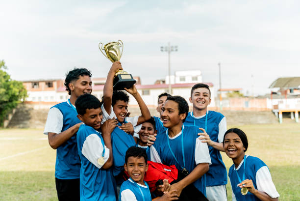

Where Champions are made
The future is now!
Whether for your child or yourself, start now to improve yourself to the best quality version of yourself possible!
Don't just take it from us. Listen to what our students had to say.
Muhammed
"Excellent coaching and session. Full warm up, very engaging and fun. Range of activities and expert knowledge. Highly recommended. You will not be disappointed! Your child will love it."
Eddie
"Very engaging, fun and competitive session. Not only tough fitness drills but some footballing activities to get you ready for game day. Me and my brother love our weekly sessions."
Amadu
"Working with Edrissa has helped me hugely with my fitness and sharp ball work. I started out with him a year ago and have restarted again. I highly recommended him if you want to improve your game."
Kams
"The sessions with Edrissa were exceptional, he was highly organised, very motivated and results driven. During my sessions with him I saw a great improvement in my fitness levels."
Abdillah
"Today was my first session with Coach Cham. As an MMA athlete I can honestly say i was pushed. It was a lot of fun however the sessions are challenging and Coach Cham shows his passion and dedication as he is constantly pushing you to do your best. A typpe of coach everyone needs in any type of sport. If you're looking for fun, to get your fitness up or have a passion for the game, sessions with Coach Cham are essential this side of the Midlands."
Takunda
My first time training with Coach Cham was an amazing experience. The activities were unexpected and yet so engaging. I thought we were just going to do some running and kicking the ball a bit but I was pleasantly surprised by how much I was pushed to limits in terms of fitness. I would say this was one of the best fitness sessions I've ever had in my life. Coach Cham himself is a breath of fresh air, he's a coach who truly has a passion for what he does and he manages to pass that onto his clients. He makes the sessions fun for all ages kids and adults no matter the skill level.
Ian
"I thought I was fit because I go gym regularly but these sessions test you differently."
Michał
"Had the pleasure of partaking with FwC and let me tell you my whole body is still aching. God damn! I feel amazing! Will definitely be doing more sessions. Helps to strengthen your core & legs especially if you play football."